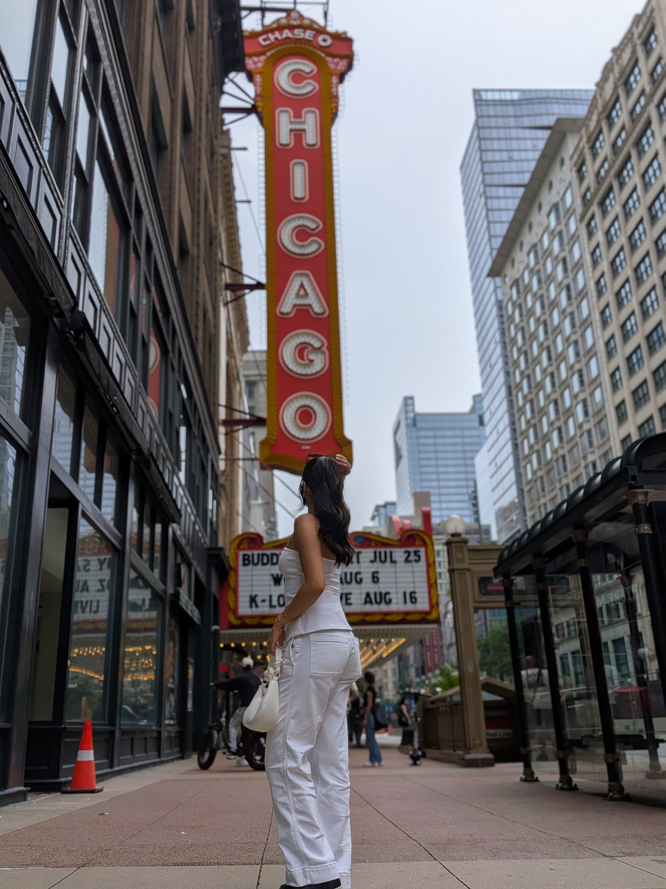
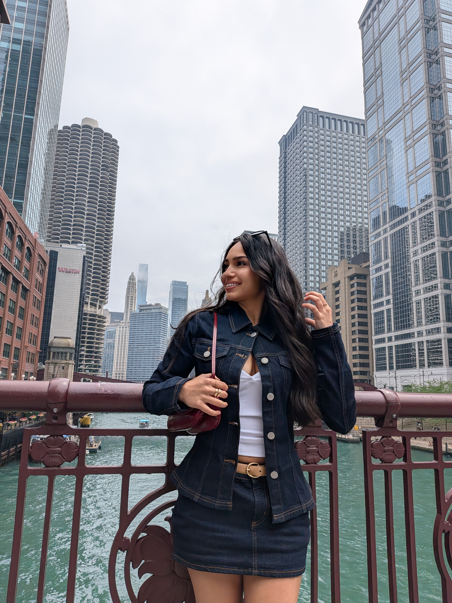

Chicago carousel — copyright evidence Photographer and copyright owner: Hassan A. KhalifehReported account: @elisaarruizReported post: https://www.instagram.com/p/Daf5B3SGzzi/
I am the photographer and copyright owner of the four photographs identified below. The reported carousel reproduces them without my authorization. I request removal of the identified unauthorized reproductions.
Each comparison shows the supplied Instagram screenshot and the corresponding source photograph. Exact source files, available metadata and a downloadable comparison PDF are provided. Supporting alternate photographs appear separately.
Download comparison PDF · Download source metadata and SHA-256 hashes
C-13 — Chicago Theatre portrait · 1 of 10 The pose, fingers, pedestrians, marquee and street details correspond; the posted image has different tonal rendering.
Camera Google Pixel 10 Capture time 2026:06:28 14:04:59 Capture offset -05:00 GPS metadata Present in source file File bytes 4675442 SHA-256 24220aae7311aa11a65bd9d1bfc61fe7bb4c49b19d7e245dd54b5a20a09c549a
C-01 — Daytime Chicago river view · 2 of 10 The cloud formations, boat positions, buildings and river view correspond.
Camera Google Pixel 10 Capture time 2026:06:27 11:13:27 Capture offset -05:00 GPS metadata Present in source file File bytes 4013869 SHA-256 2f5174c5e6df34a01620ed9f647d459b9e5ebb880031eef6ab9226c14b2d37a8
C-03 — Bridge portrait · 4 of 10 The hand and hair positions, clothing folds, bridge and skyline correspond.
Camera Google Pixel 10 Capture time 2026:06:27 12:35:26 Capture offset -05:00 GPS metadata Present in source file File bytes 3696032 SHA-256 29b0a3c2f31e2f007f554905aacb061c61c2f71cd43a6a692e184d1f9ab56303
C-08 — Nighttime Chicago river view · 10 of 10 The buildings, lights, bridge and traffic details correspond.
Camera Google Pixel 10 Capture time 2026:06:27 23:42:53 Capture offset -05:00 GPS metadata Present in source file File bytes 3376244 SHA-256 29895c9a6a5c27fb6326d2fe2af3b528f58b5f849a5308292ec47192d1297d21
Supporting alternate photographs Additional photographs from the same scenes document the photographic sequence. Their individual capture fields are recorded in the metadata file.

PXL_20260628_190457367.PORTRAIT.jpg — supporting alternate photograph 
PXL_20260627_173525264.MP.jpg — supporting alternate photograph PXL_20260627_173531557.jpg — supporting alternate photograph Photographer and copyright owner: Hassan A. Khalifeh. Evidence updated October 18, 2026.